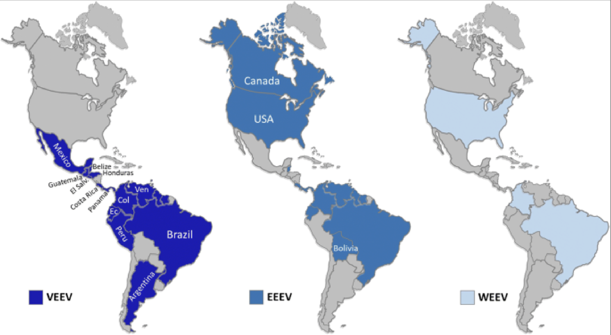

renderedTree = tree.render({'left-right-spacing':'fit-to-size','top-bottom-spacing':'fit-to-size','is-radial':true,'selectable':false,// make nodes and branches not selectable'binary-selectable':false,'collapsible':false,'transitions':true,'show-menu':false,'show-scale':false,'align-tips':true,'width': width,'height': height,'zoom':false,'minimal-per-node-spacing':20,'minimum-per-level-spacing':20,'container':'svg' }).layout(true).style_nodes(function(element, data) {// Implement functionality for each node// DOM objects can be selected using d3.select (or selectAll)// make sure we override the context menu// element.on('contextmenu', (d) => {// console.log("contextmenu triggered on " + d);// d.preventDefault();// })// hover functionality element.on('mouseover',function(event, d) {console.log("hover triggered on "+this);drawMenu(data, menuItems,this,event); }); }).show();
Background
Alphaviruses are a group of human and animal viruses that belong to the family Togaviridae. Alphaviruses are mainly transmitted by the bite of hematophagous arthropods (e.g. ticks and mosquitoes) (1). Based on the disease presentation, alphaviruses are divided into encephalitic and arthritogenic.
Transmission and epidemiology
Alphaviruses are generally maintained in the wild via enzootic/epizootic transmission cycles between an arthropod vector (mostly mosquitoes) and animal reservoirs such as primates, forest birds, horses and macropods (2, 3). On certain occasions, human infections can occur by direct spillover from these cycles via the bite of infected mosquitoes (2).
Encephalitic alphaviruses such as Venezuelan Equine Encephalitis virus (VEEV), East (EEEV) and West (WEEV) are predominant mainly in the American continent (3). These viruses are transmitted by mosquitoes bites and wild birds are the main reservoir host. Horses and humans are considered dead-end hosts for EEEV and WEEV viruses they do not develop enough viremia to infect mosquitoes and maintain the transmission cycle (3). On the other hand, equids are the key reservoir host for VEEV because they develop high titer viremia that can act as source of infection for subsequent feeding mosquitoes (3).

Geographical distribution of the equine encephalitis: Venezuelan (VEEV), East (EEEV) and West (WEEV) in the Americas (4).
The majority of arthritogenic alphaviruses are currently endemic to specific geographical regions or continent. Ross River virus (RRV) (5) and Barmah forest virus (BFV) (6) are endemic in Australia, ONNV in Sub-Saharan Africa (7), and Mayaro virus (MAYV) in the South and the Central Americas (8). In contrast, Chikungunya virus (CHIKV) is endemic in several continents. To date, only CHIKV showed the ability to be transmitted in urban cycles i.e. human-mosquito-human, similar to some flaviviruses (4). In 2004, CHIKV has re-emerged in South East Asia and the Indian ocean islands and from there it spread to other countries resulting in massive outbreaks with high morbidity rates (9). In December 2013, local transmission of CHIKV has been reported for the first time in the Americas. Since then, millions of CHIKV cases have been reported in the Caribbean region and several countries of Central and South America (9).
Summary of known arthritogenic alphavirus outbreaks, with geographical distribution of most prominent arthritogenic alphaviruses and main mosquito vectors (BFV: Barmah Forest virus, ONNV: O’nyong’nyong virus, SINV: Sindbis virus) (10).
Disease symptoms
Infection with encephalitic alphaviruses (EEV, WEEV, VEEV) cause symptoms ranging from mild febrile illness (such as fever, chills, malaise, severe headache, myalgia) to severe encephalitis that can lead to death (4). Children are more likely to suffer permanent neurological damage. Infections with arthritogenic alphaviruses such as chikungunya virus (CHIKV), Mayaro virus (MAYV) and Ross River virus (RRV) mainly result in rheumatic disease that causes debilitating pain in the joints (2). The symptoms of acute disease caused by arthritogenic viruses include fever, bilateral symmetrical arthritis and sometimes skin rash. Although acute infections by arthritogenic alphaviruses are self-limiting, several patients suffer from a chronic polyarthritis that can severely incapacitate the patient for weeks and even up to several years after the acute stage (9). Recent outbreaks of arthritogenic alphaviruses such as CHIKV have also been associated with neurological manifestations, e.g. myelopathy, Guillain-Barré syndrome and meningoencephalitis, especially in elderly patients with comorbidities and neonates (11).
Clinical relevance
The Eastern Equine Encephalitis virus (EEEV) and the Venezuelan Equine Encephalitis virus (VEEV) are rare causes of encephalitis. Approximately 30% of people with EEE die and many survivors have ongoing neurologic problems. For VEEV, the mortality in humans is lower than 1%, but neurological symptoms are seen in up to 14% of the infected persons. Both viruses have shown the ability to be disseminated via aerosols in laboratory settings (12) and have been classified as Select Agents as they may potentially be used as a bio-weapon (2).
CHIKV presents a significant global health threat because of its high disease burden, widespread (re-)emergence, and the lack of vaccines and therapeutics. In the last decades, CHIKV re-emerged in many parts of Africa and Asia, causing large-scale epidemics. Also other alphaviruses, including Mayaro virus, and Ross River capable of inducing severe disease (2, 8). Although these viruses have not yet been associated with large epidemics, it cannot be excluded that this will happen in the future. The Mayaro virus (MAYV) is a neglected virus similar to CHIKV which can cause long-term debilitating arthralgia that can last for weeks. This virus has been suggested to have the potential to cause the next arbovirus epidemic. The Ross River virus (RRV) is endemic in Australia and Papua New Guinea and can result in joint pain, fever, tiredness, and rash.
The change in mosquito vectors distribution, caused by global warming, virus adaptation to new mosquito species and the increase in the international travel could result in expansion of alphaviruses in the future.
Current treatment
Several alphaviruses have (re-)emerged worldwide and became a major public health threat. However, there is no approved antiviral drug for the treatment of these viral infections. The current treatment depends on symptomatic relief by using analgesics, antipyretics, non-steroidal anti-inflammatory drugs and, in severe cases, methotrexate (2).
Selection of viruses for VirusBank platform
The primary viruses of interest for VirusBank are CHIKV, MAYV, RRV and VEEV due to their epidemic potential and severity of disease caused by these viruses as described before in the clinical relevance. SFV and SINV will be included as tool viruses for screening for broad spectrum activity.
Available assays/tools
CPE reduction assay (96 well format)
This antiviral assay measures the ability of a tested compound to protect infected cells from virus-induced cytopathic effects (mostly virus-induced cell death). The cell viability can be determined in a colorimetric assay using MTS/PMS method.
We have it for CHIKV, RRV, MAYV and under optimization for SINV and SFV on Vero or Vero E6 cells
Virus yield assay
This antiviral assay measures the ability of a tested compound to inhibit the viral replication in an infected cell culture through quantifying the viral RNA and the infectious virus loads released in the supernatant. This assay can be used for validation of compounds that show efficacy in CPE-reduction assays and to confirm that the compounds have direct effect on viral replication (not only cytoprotective).
We have it for CHIKV and MAYV and under optimization for RRV, SINV and SFV
Delay of treatment assay (Time-of-addition)
This a test to determine the stage(s) of the viral replication cycle at which the compound exerts its antiviral effect. Briefly, cells are treated with the compound at different time points prior or after the infection with the virus then cells are incubated for example until the end of one or 2 replication cycles. At the end of incubation, the intracellular and extracellular viral RNA loads at each time point are quantified by qRT-PCR to determine at which stage(s) the compound is still effective and when it loses its antiviral efficacy.
We have it for CHIKV and MAYV
Plaque assay
This assay is a standard method to quantify infectious virus titers in a sample. Briefly, the test sample is serially diluted then aliquot of each dilution is added to a well in a cell culture plate with incubation to allow virus attachment followed by removal of the viral input and adding overlay of agarose or similar viscous material that limit the spread of viral infection. Under this condition, the attached virion will start to replicate producing more virions that will kill surrounding cells to generate a hole or plaque in the cell monolayer. By removal of the overlay and staining the live cells for e.g. by Crystal violet or methylene blue, this will provide a dark background for clear visualization of plaques. By counting the plaques at certain dilution(s), the plaque forming units (PFU)/mL can be calculated.
We have it for CHIKV, RRV, SINV, SFV and MAYV
Quantitative reverse-transcriptase PCR (qRT-PCR)
This technique is used for quantification of genome copies for RNA viruses in samples of interest for e.g. virus stock, clinical samples, compound-treated cells or tissues. First, a targeted region of the viral RNA is transcribed into complementary DNA (cDNA) by reverse transcriptase from total RNA. The cDNA is then used as the template for the quantitative PCR reaction where DNA binding fluorescent dye such as SYBR green or a labelled virus specific probe such as TaqMan® probes is used to detect the DNA amplification and hence enable quantification of the genome copies in the original samples (by including serial dilutions of a standard material with known genome copies in the same run).
We have it for CHIKV, RRV, SINV, SFV and MAYV
Reverse genetics system
The reverse genetic system is mostly a plasmid-based system that can be used to insert the desired mutations in the viral genome to study the effect of these mutations on viral replication, virulence, sensitivity to antiviral compounds and etc in vitro and in vivo. Such systems can also be used to engineer viruses carrying reporter genes for development of high throughput antiviral assays or easily detection method for in vivo replication.
We have infectious plasmids for CHIKV with or without reporter and we have an infectious mCherry plasmid for SFV.
Animal models
We have animal models for CHIKV and RRV to test the efficacy of antiviral compounds.
AG129 mice: Lethal model (with neurological symptoms)
C57BL/6 mice: footpad arthritis model
References
R. Abdelnabi, S. Jacobs, L. Delang, J. Neyts, Antiviral drug discovery against arthritogenic alphaviruses: Tools and molecular targetsBiochem. Pharmacol. 174 (2020), doi:10.1016/j.bcp.2019.113777.
L. I. Levi, M. Vignuzzi, Arthritogenic Alphaviruses: A Worldwide Emerging Threat? Microorganisms 7, 133 (2019).
M. Barba, E. L. Fairbanks, J. M. Daly, Equine viral encephalitis: prevalence, impact, and management strategies. Vet. Med. Res. Reports 10, 99–110 (2019).
C. Guzmán-Terán, A. Calderón-Rangel, A. Rodriguez-Morales, S. Mattar, Venezuelan equine encephalitis virus: the problem is not over for tropical America. Ann. Clin. Microbiol. Antimicrob. 19, 19 (2020).
X. Liu, K. Tharmarajah, A. Taylor, Ross River virus disease clinical presentation, pathogenesis and current therapeutic strategiesMicrobes Infect. 19, 496–504 (2017).
N. Kurucz, P. Markey, A. Draper, L. Melville, R. Weir, S. Davis, A. Warchot, R. Boyd, D. Stokeld, Investigation into High Barmah Forest Virus Disease Case Numbers Reported in the Northern Territory, Australia in 2012–2013. Vector-Borne Zoonotic Dis. 16, 110–116 (2016).
G. Rezza, R. Chen, S. C. Weaver, O’nyong-nyong fever: a neglected mosquito-borne viral disease. Pathog. Glob. Health 111, 271–275 (2017).
Y. Acosta-Ampudia, D. M. Monsalve, Y. Rodríguez, Y. Pacheco, J. M. Anaya, C. Ramírez-Santana, Mayaro: an emerging viral threat? Emerg. Microbes Infect. 7, 1–11 (2018).
G. Rezza, S. C. Weaver, Chikungunya as a paradigm for emerging viral diseases: Evaluating disease impact and hurdles to vaccine development. PLoS Negl. Trop. Dis. 13, 1–12 (2019).
A. Zaid, Intravital imaging of skin infections. Cell. Immunol. , [Epub ahead of print] (2019).
R. Mehta, P. Gerardin, C. A. A. de Brito, C. N. Soares, M. L. B. Ferreira, T. Solomon, The neurological complications of chikungunya virus: A systematic reviewRev. Med. Virol. 28 (2018), doi:10.1002/rmv.1978.
E. B. Hayes, J. E. Staples, in S. S. B. T.-P. and P. of P. I. D. (Fourth E. Long, Ed. (Elsevier, London, 2012), pp. 1097-1099.e2.
N. J. MacLachlan, E. J. B. T.-F. V. V. (Fifth E. Dubovi, Eds., in (Academic Press, Boston, 2017), pp. 511–524.